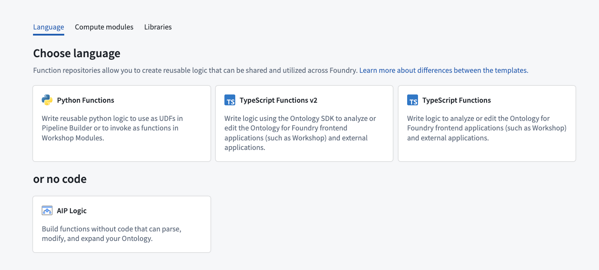
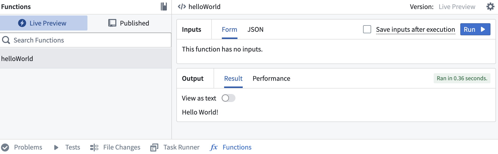
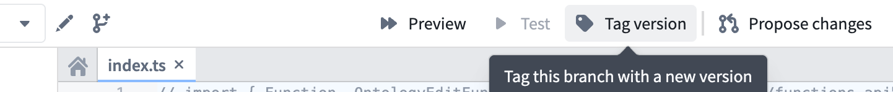
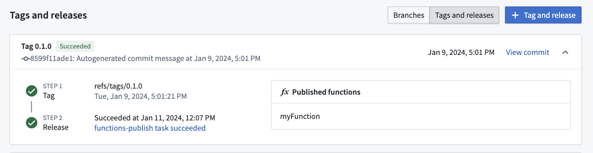
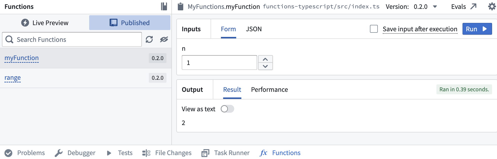

:::callout{theme="neutral"} You can author functions repositories in VS Code workspaces with the same interface and tooling. VS Code workspaces support live preview, resource imports, SDK generation, and release management. :::
There are three language options for getting started with functions in Foundry: TypeScript v1, TypeScript v2, and Python. For more information on supported features for each language, review the language feature support specifications.
Although each language has a different set of supported features, you will be able to access the same basic platform functionality for each language, including running, testing, and publishing functions. This page provides an overview of these features to help you understand how to use functions repositories, regardless of which language you will be working with.
For more detailed instructions on getting started with a specific language, refer to the tutorials below:
Review the sections below for general information on functions repository creation and usage.
When creating a functions repository, you will be able to choose the language that best suits your needs. You can initialize functions repositories directly from a project of your choice by selecting + New > Repository, or from the Code Repositories application by selecting + New repository in the top right. Once the repository has been initialized, you can add and run functions.

For detailed instructions on how to create a functions repository for a specific language, refer to the tutorial sections below:
You can develop functions repositories in either Code Repositories or VS Code workspaces:
Learn more about VS Code workspaces.
The functions live preview allows you to test your functions before committing them to your repository. You can run a function in live preview after adding it to your repository. To do so, open Functions on the bottom toolbar and select Live Preview. Choose a function, enter input values, and select Run to run the function.

:::callout{theme="warning"}
Live preview runs in a different runtime environment than published functions. Differences include CPU resources, available memory, and how long a function can run before timing out.
Manage the runtime environment for published functions.
:::
Select Commit in the upper right to commit your changes to the master branch of your repository.
Once you commit your work, you will see the option to Tag version. This will publish all of the functions in your repository to the functions registry, making them accessible across the platform.

Select Tag version to tag a release off of the master branch. Set the tag name based on the extent of your changes, then choose Tag and release.
To view progress as your functions are tagged and released, select the View pop-up or navigate to the Tags tab. Once Step 2: Release is completed, select the published functions to view them in the functions registry.
:::callout{theme="warning"} Functions may not be immediately searchable by name in Workshop or the functions registry while permissions propagate. :::

After the checks for your tag have passed, navigate back to the Code tab in Code Repositories and select Functions from the bottom toolbar. You should see your new function under the Published section. Select it, and try running the new function:
